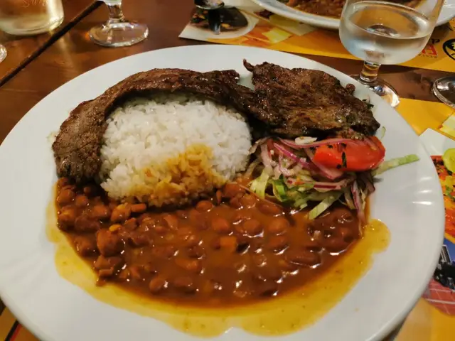
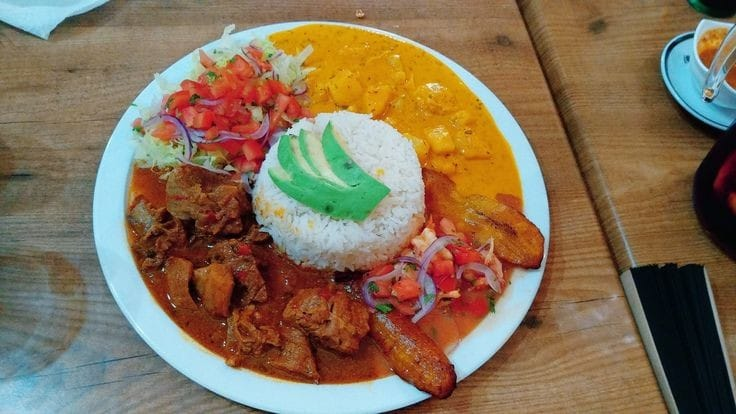

Ecuadorian gastronomy is a reflection of the country's geographic and cultural diversity. From the coast to the highlands, passing through the Amazon, traditional dishes stand out for their unique flavors, native ingredients and culinary techniques passed down from generation to generation. One of these representative dishes is “la bandera”, a symbolic sample of Ecuador's culinary richness.
Origin and Significance
"La bandera ecuatoriana" is more than a food dish; it represents a synthesis of the country's gastronomic influences, especially from the coastal region. It is said that this dish owes its name to its arrangement on the plate, as the food is arranged in horizontal stripes, evoking the colors of the flag of Ecuador: yellow, blue and red.
This dish traditionally includes rice (symbolizing the yellow stripe), stew (usually lentils or beans, representing the blue stripe), and meat (usually beef, chicken or fish, symbolizing the red stripe). Although it may vary depending on the region and personal taste, the essence of the flag remains unchanged: the combination of carbohydrates, proteins and vegetables that reflect the balance in the Ecuadorian diet.
Main Components
- Rice: This is the basic ingredient in most Ecuadorian dishes, especially on the coast. It is versatile and serves as an essential accompaniment. In the flag, plain cooked rice or with a touch of garlic is fundamental.
- Stew: A preparation based on lentils or beans, which is slowly cooked with spices such as cumin, garlic and onion. The menestra is a distinctive element of the dish, not only for its flavor, but also for its high fiber and vegetable protein content.
- Meat: In most versions, the meat that accompanies this dish can be fried or grilled beef, although it is also common to find chicken or fish, depending on preference. This choice brings animal protein to the dish, balancing the macronutrients.
Cultural Importance
The flag is a clear expression of the coastal culture, although it has also been adopted in other regions of the country due to its popularity and simplicity. The dish has been adapted in various Ecuadorian cuisines and has become a common meal in homes and popular restaurants.
This dish is not only a gastronomic option; it is a representation of the mestizaje that defines the Ecuadorian identity. Ingredients, such as rice (introduced by the Spanish colonizers), are mixed with native products such as beans, making the flag a dish that combines indigenous and European elements.
Nutritional Value
From a nutritional point of view, "La bandera ecuatoriana" is a balanced dish. The rice provides complex carbohydrates, essential for energy, while the stew adds vegetable protein and dietary fiber, which is important for digestion. The meat, in turn, is an important source of protein, iron and other essential minerals. The balance of these elements makes the flag a complete and nutritious meal.
Conclusion:
“La bandera ecuatoriana” is not only a traditional dish, but an expression of the cultural and gastronomic richness of Ecuador. When you taste it, you not only taste the typical flavors of the coast, but you also experience the history and mestizaje of a nation. The popularity of this dish in the country and its inclusion in the repertoire of everyday cuisine demonstrates how food can become a symbol of identity, connection and national pride.
Bibliographic References
Chiriboga, D. (2012). Cocina ecuatoriana: Historia, identidad y cultura. Quito: Editorial Abya Yala.
Ramos, G. (2015). Sabores del Ecuador: Tradiciones y recetas. Guayaquil: Editorial Orellana.
Silva, M. (2018). "Gastronomía ecuatoriana: Tradición y modernidad". Revista Cultura y Sociedad, 34(2), 45-60.
Vera, J. (2020). Platos típicos del Ecuador: Un viaje gastronómico. Cuenca: Ediciones Andinas.
This essay seeks to provide a clear and concise vision of the importance of the flag in Ecuadorian cuisine, its symbolism and its relevance in the country's culture and food.